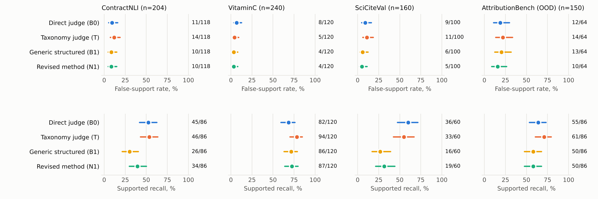

[Author name 1], [Affiliation] · [Author name 2], [Affiliation] · With Apart Research
1 Research conducted at the AI x Epistemics Research Sprint, November 2026. Track 2 (trust infrastructure); the error-mechanism analysis also bears on Track 1.
Tools that check whether a source supports a claim are among the first epistemic tools people will rely on, and early tools tend to be trusted whether or not they earn it (Finnveden, 2024). A support label from a model is a conclusion; a reader who cannot see why support fails has to trust the grader. The Nyāya tradition offers a worked-out answer to “in which distinct ways can a reason fail to establish a claim?”: the reason is not present in the subject, holds only of part of it, holds only under an unstated condition, strays, proves the opposite, is overridden, or is counterbalanced. Each looks like a real citation failure. Our hypothesis was that making the model commit to such a structure, pinning every premise to a verbatim quote, and deriving the verdict mechanically would reduce false acceptance of unsupported citations and make the remaining errors inspectable.
We tested that hypothesis twice, registering data, prompts and analysis before each held-out run, and it did not hold in the form we expected. Our main contributions are:
Attribution and citation evaluation. ALCE (Gao et al., 2023) scores citation recall and precision with an NLI model. AttributionBench (Li et al., 2024) shows that deciding whether evidence supports a statement remains hard even for fine-tuned models, and we use its out-of-distribution split. CAQA uses finer labels than binary support. VitaminC (Schuster et al., 2021) pairs each claim with evidence that differs in one decisive fact; ContractNLI (Koreeda and Manning, 2021) tests document-level entailment with conditions and exceptions; SciCiteVal (2026) tests citation correctness with human-written distortions; AVeriTeC (Schlichtkrull et al., 2023) supplies real-world claims with evidence. We use these rather than only our own items.
Structured and neuro-symbolic verification. FActScore-style methods decompose claims into atomic facts before checking them. Logic-LM (Pan et al., 2023) has a model translate a problem into a symbolic form and a solver execute it. Our method is narrower than Logic-LM: there is no general solver or logic translation, only a fixed decision rule over a small typed record whose every entry is tied to a located quote, under open-world semantics (silence is “unknown”, never “false”). Our results are consistent with the known weak point of that family: the translation step, not the symbolic step, carries the errors. Verbatim quoting as a guard against invented evidence is used in deployed citation features. We claim no novelty for decomposition, quote grounding or fine-grained labels. Someone would use our method over a direct judge not for accuracy but when they need a record a third party can recompute; what it adds to prior knowledge is a measurement of what that record costs and which of its parts do any work.
Task. Given a claim and an allowed source context, decide supported, contradicted or not established. The primary errors are false support (an unsupported item accepted) and lost recall (a supported item rejected).
Systems. All use claude-haiku-5-5 through headless Claude Code (the provider-reported model identifier on every call), default sampling, no tools, and receive the same claim, source, labelling policy and one-paragraph task note per benchmark. B0: a direct three-way judge, one call. T: the same judge given the failure taxonomy as definitions. B1: a generic structured verifier; the model lists claim parts, quoted evidence per part with relation, same-entity and same-scope flags, and quoted missing conditions; a fixed rule decides. N1: our revised method. Both structured systems ground quotes by exact or whitespace-collapsed string match; a quote found zero or several times is refused, and nothing is repaired.
The N1 record (all entries are the model’s; provenance is recorded as such). The claim is split into asserted parts, each with polarity, quantifier, whether its own wording is universal, and modality. Each quoted passage carries a stance judged against the part exactly as written (affirms, denies, weaker, unrelated), a basis (states; necessarily implies; merely suggests or exemplifies), and a subject match (same, broader, narrower, different). Each quoted qualifier carries a typed relation (necessary condition, scope restriction, temporal restriction, exception, uncertainty qualifier, incidental detail), the aspect of the claim it changes, and whether the claim already states it. The rule. A part is supported if a located passage affirms it by statement or necessary implication about the same or a broader subject, no located passage denies it, and no located, unstated qualifier of a blocking type applies; exceptions block only universally worded claims; a claim of possibility or “some” needs one witness. Denial alone gives contradicted; passages on both sides raise an explicit conflict flag and both are kept; likelihood or examples never count as proof. Every part must be supported.
Certificates and audit. Each outcome is appended to a hash-chained ledger (pre-existing component) whose head is signed with Ed25519. An audit discards every derived field and recomputes it: quote locations and offsets from the hashed source text, then the decision. Certificates are versioned and replay only under their own rules. The signer’s key must come from outside the bundle; without a trusted earlier checkpoint an older signed ledger still passes, so this is not a transparency log. We keep five properties apart: (1) the quote occurs in the source, checked; (2) the quote means what it is filed as, not checked; (3) subject, scope, time and strength match, compared mechanically but from model-assigned labels; (4) the conclusion follows from the rule, checked; (5) the certificate is unchanged, checked.
Experiment 1 (first method). 117 held-out items from 36 passages: 72 from Indian statutes and the Constitution, 45 from AVeriTeC evidence passages with passage-level labels written for this study (49 supported, 68 not), plus 23 constructed adversarial items. The first method used a five-member record with one untyped “omitted condition” flag and no claim polarity, three extraction runs with majority vote, and ablations for grounding and a lexical guard. Labels were drafted by an AI assistant before any system ran and have not yet been reviewed by a human.
Experiment 2 (revised method). After Experiment 1 we wrote an annotation policy (default-rule versus universal reading; harmless versus necessary omissions), revised the record as above, and evaluated on public benchmarks with their own human labels: 12 whole ContractNLI test contracts × 17 hypotheses (204 items, full document in the prompt); 70 complete VitaminC contrast groups (240); 160 SciCiteVal items in whole source families (60 correct, 60 incorrect, 40 unrelated), never used in development; and 150 AttributionBench out-of-distribution items. Samples were fixed by seed before any prediction. Development used 40 items each from the ContractNLI, VitaminC and AttributionBench development splits and two rounds of prompt revision, applied to all systems.
Registration and metrics. For each experiment, data hashes, prompts, the scorer and the protocol were committed before the first held-out call (commits beb6cf7 and 8224cb2). We report false-support rate, supported recall and, where gold has three labels, three-way accuracy, per dataset and never pooled into one estimate; Wilson intervals; and family-cluster bootstrap intervals for paired differences, because items from one document are not independent. Five comparisons per dataset are unadjusted, so one interval excluding zero is suggestive only. Malformed replies stay in the denominator. All {{calls}} Experiment 2 evaluation calls succeeded ({{failed}} failed); total cost ${{cost}}.
| {{hdr}} |
|---|
| System | {{sub}}

Figure 1. Experiment 2: false-support rate (top) and supported recall (bottom) with Wilson 95% intervals. Dots are observed rates; counts at right.
On the two primary datasets, N1’s three-way accuracy was {{cn_acc}} for the direct judge on ContractNLI (difference {{cn_d}}) and {{vc_acc}} on VitaminC ({{vc_d}}). The registered hypothesis that N1 would at least match B0 failed on ContractNLI and held without a clear margin on VitaminC. The taxonomy-prompted judge T, which uses no record and no rule, had the highest recall on three of four datasets.
N1 accepted no more unsupported items than B0 on any dataset; summed descriptively over the four, {{fsN}} of {{fsn}} against {{fsB0}} (B1 {{fsB1}}, T {{fsT}}). The paired differences are small: VitaminC {{vc_fs}} and SciCiteVal {{sc_fs}} exclude zero, the other two do not, and none is adjusted for multiplicity. The price is recall: {{rcN}} of {{rcn}} supported items against {{rcB0}} for B0 (ContractNLI {{cn_rc}}; SciCiteVal {{sc_rc}}; AttributionBench {{ab_rc}}). Whether that trade is worth making depends on the relative cost of the two errors; it is a different operating point, not a better verifier. On SciCiteVal the gain is concentrated in one distortion type: of {{tpn}} “tortured phrase” items, B0 accepted {{tpB0}} and N1 {{tpN}}; over all 60 related-but-incorrect items, B0 accepted {{incB0}} and N1 {{incN}}, while of the 60 correct ones B0 accepted {{corB0}} and N1 only {{corN}}.
N1 against B1: three-way accuracy {{cn_b1}} on ContractNLI and {{vc_b1}} on VitaminC; false support was equal or within three items everywhere. The typed qualifiers, graded subject match and stance-against-the-claim add expressiveness that is visible in the record but not in the outcomes. We therefore do not claim an algorithmic contribution from the Nyāya vocabulary beyond what ordinary structured extraction gives; its value here is as a principled checklist for what the record should contain.
Grounding: none. Switching verbatim grounding off changed no outcome on any dataset. {{qk}} of {{qn}} N1 quotes were located (and all 319 in Experiment 1). With this model the extractor does not invent quotes, so the mechanical check has nothing to catch; it remains what makes the record auditable. Qualifiers: a precision–recall dial. Ignoring qualifiers raised recall on every dataset ({{rcNQ}} of {{rcn}} in total, against {{rcN}}; ContractNLI {{cnq}} for N1 relative to the ablation) and let through a few more unsupported items ({{fsNQ}} against {{fsN}}). Repetition: little. On 40-item subsets with three calls each, majority voting changed supported recall by {{maj_txt}}; all three runs agreed on: {{stab_txt}}. Agreement is stability, not confidence. Cost. On ContractNLI an N1 call produced about {{n1tok}} output tokens (${{n1c}}) against {{b0tok}} (${{b0c}}) for B0; equal call counts are not equal compute.
VitaminC groups share a claim or a sentence and differ in one decisive fact. All rows of a group were correct for {{cgB0}} of 70 groups with B0, {{cgT}} with T, {{cgB1}} with B1 and {{cgN}} with N1. A changed label alone is not success if either label is wrong, so this is the stricter measure of sensitivity to evidence; again structure does not stand out.
On our 117 items no system accepted any of the 68 unsupported claims, so the set cannot separate systems on false support; recall was {{e1_d}} for a one-call direct judge, {{e1_t}} for the taxonomy judge and {{e1_p}} for the first pipeline. None of 19 fixed adversarial items (irrelevant quotes, scope inflation, cherry-picked fragments, misattributed entities, appended fabrications, embedded instructions) fooled any system, and the four supported controls were accepted by the pipeline and both judges; the test is small, non-adaptive and written by the method’s author. Reading all 20 pipeline errors from their certificates gave three causes: {{exc}} where a real exception or an incidental detail was treated as a blocking condition, {{pol}} where a negative source sentence matching a negative claim was filed as a denial, and {{ann}} where the label itself is doubtful. These diagnoses are the authoring assistant’s, not a human reviewer’s. An exploratory replay of the recorded extractions with the untyped condition rule removed (no new model calls; rules chosen after seeing the errors, so not a held-out result) gave recall {{rq_rc}}/49 but accepted {{rq_fs}} of 68 unsupported items: the rule was doing real work as well as harm, which is why Experiment 2 types it instead of deleting it.
All 117 + 753 certificates replay and pass audit against separately held keys. Automated tests show the audit failing at the right step for: a one-character edit; reordered, deleted and truncated events; a re-signed ledger with a substituted key; no trusted key; an unsigned tail; rollback when a checkpoint is held; a swapped source text; and, for a forger who recomputes the id and chain, altered offsets, located-flags, verdict, status or score. Three further tests, counted separately as known-limit tests rather than correctness tests, assert that a quote filed with inverted polarity, attached to the wrong entity, or read as causal when it is correlational is accepted if the extractor files it so.
What the results mean. For this model and these tasks, the bottleneck is reading, not reasoning. Asking the model to externalise its reading into a typed record did not make the reading better, and a deterministic rule over that record inherits every misreading while adding its own rigidity. The readable record is also not evidence of how the model reasons internally; it is an output, and we make no interpretability claim about the model. The practical lesson for trust infrastructure is to separate the two jobs: use the best available judge for the label, and attach a quote-grounded, replayable record as evidence for inspection, rather than deriving the label from the record. The secondary question has a clear answer: in Experiment 1 every error was a semantic extraction error, a representational gap or a doubtful label; none was a rule, parser or aggregation fault; and every one of them survives a successful integrity audit, by design.
Limitations. (i) Experiment 1 labels are AI-drafted and unreviewed; a blind review packet and policy exist but no human judgment has been recorded, so every Experiment 1 number is provisional. Experiment 2 uses the benchmarks’ own labels, which contain noise we did not correct. (ii) One model, default sampling, one prompt per system after two development rounds; a stronger or weaker model could change the picture, especially for grounding. (iii) Modest samples: per-dataset intervals are wide and comparisons unadjusted. ContractNLI has only 17 recurring hypotheses. SciCiteVal’s incorrect items are human-written distortions, not naturally occurring errors. (iv) We imposed one labelling policy and wrote task notes from benchmark documentation; a mismatch with a benchmark’s conventions affects all systems but perhaps not equally. (v) Whether inspectable records help people catch errors was not measured; no human audit study, no independently annotated failure tags, and no human-corrected-extraction diagnostic were completed. (vi) Time is representable only as a qualifier; subject binding, polarity and causal reading remain unchecked model assignments. (vii) No Lean verification, counter-source retrieval, FOLIO/ProofWriter diagnostics or second model were run.
Future work. A randomised human audit study comparing a judge’s one-line rationale with the structured record, measuring error detection, localisation and time; human adjudication of the Experiment 1 labels under the written policy; the same comparison with weaker and stronger models; and using the record as evidence attached to a direct judgment rather than as its source.
We set out to show that a Nyāya-inspired, quote-grounded pipeline verifies citations better than asking a model directly. In two registered evaluations it did not: it was no more accurate, it was more conservative, its distinctive typing was indistinguishable from generic structure, and its verbatim check never fired. What survives is narrower and, we think, still useful: a precise account of what a replayable citation certificate can and cannot establish, working code that enforces that boundary, and evidence about which components of such a system earn their cost.
Code repository: [link to the pramana-bind repository, to be added by the authors]. Data: the repository contains the Experiment 1 items, the adapted Experiment 2 samples with licence references, pinned download and adaptation scripts, all raw model replies, predictions, metrics, signed ledgers, the frozen protocols, the annotation policy and review packets, a claim-to-evidence table (submission/CLAIMS.md) and a viewer built from real certificates.
[To be completed by the authors.]
Finnveden, L. (2024). What’s important in “AI for epistemics”? Forethought.
Gao, T., Yen, H., Yu, J., Chen, D. (2023). Enabling Large Language Models to Generate Text with Citations (ALCE). EMNLP.
Koreeda, Y., Manning, C. (2021). ContractNLI: A Dataset for Document-level Natural Language Inference for Contracts. Findings of EMNLP. aclanthology.org/2021.findings-emnlp.164
Li, Y., Yue, X., Liao, Z., Sun, H. (2024). AttributionBench: How Hard is Automatic Attribution Evaluation? Findings of ACL. aclanthology.org/2024.findings-acl.886
Min, S., et al. (2023). FActScore: Fine-grained Atomic Evaluation of Factual Precision in Long Form Text Generation. EMNLP.
Pan, L., Albalak, A., Wang, X., Wang, W. (2023). Logic-LM: Empowering Large Language Models with Symbolic Solvers for Faithful Logical Reasoning. Findings of EMNLP. aclanthology.org/2023.findings-emnlp.248
Schlichtkrull, M., Guo, Z., Vlachos, A. (2023). AVeriTeC: A Dataset for Real-world Claim Verification with Evidence from the Web. NeurIPS Datasets and Benchmarks.
Schuster, T., Fisch, A., Barzilay, R. (2021). Get Your Vitamin C! Robust Fact Verification with Contrastive Evidence. NAACL. aclanthology.org/2021.naacl-main.52
SciCiteVal (2026). LREC. aclanthology.org/2026.lrec-1.125; dataset huggingface.co/datasets/birdie0111/SciCiteVal [author list to be confirmed by the authors]
What the result does and does not establish. It establishes that, for one model and five datasets, a structured quote-grounded verifier was not more accurate than a direct judge and was more conservative. It does not establish that structure cannot help with other models, longer sources or adversarial extractors; that any citation is true (the task is support by a passage, not truth of the source); or anything about the law (statutory items test agreement with an excerpt only).
Over-trust. A signed, hash-chained certificate looks authoritative. Signature and replay show only that the record is unchanged and that its conclusion follows from the recorded quotes and model-assigned labels. Presenting integrity as a single “verified” badge would mislead; the viewer keeps semantic status, extraction instability and integrity apart, and the audit command prints that it does not assert the interpretation is correct.
Use to manipulate rather than inform. A party could run the method until it yields “supported”, publish only that certificate, or choose a passage that supports a claim while omitting a contrary one; nothing forces disclosure of other attempts or sources, and the evaluated system retrieves no counter-evidence. The documented failure modes (inverted polarity inside a quote, misattributed entities, selective quoting) tell an attacker where a quote-grounded checker is weakest; we disclose them because the same list tells deployers what not to rely on.
Wording. An unlocated source yields “unresolved”, never a statement that a citation is fabricated: not finding a source is no evidence either way.
Personal data. No personal data were collected. AVeriTeC-derived and AttributionBench items contain public claims about public figures, several false; they are used as evaluation material with their sources, not as assertions. Dataset licences (CC BY-NC 4.0, CC BY-SA 3.0, CC BY 4.0, Apache-2.0) are recorded per item; ContractNLI ships terms of use that the authors should read before redistributing.
Pre-existing before 13 November 2026, imported unchanged: the pravrudhi engine 0.6.34 (nyaya_quote.locate_quote, nyaya_validity.derive_verdict, the constructed gold set, the statute corpus) and pravrudhi_kernel 0.1.0 (hash-chained ledger, canonical JSON, chain verification); the public datasets. New during the sprint: everything in the pramana-bind repository: both record schemas, extraction prompts, decision rules, baselines, certificate signing and audit, datasets and labels for Experiment 1, adapters, protocols, evaluation scripts, viewer, and all results. A separate symbolic regression check (the first method’s rules agree with the pre-existing derive_verdict on 600 constructed closed worlds) is about rule consistency on constructed data, not natural language, and no Lean check was run.
An AI coding assistant (Claude) wrote the code, drafted the Experiment 1 items and labels, ran the experiments and drafted this report under the authors’ direction. The evaluated systems use a different, smaller Claude model. Every number in the report is read by submission/build_report.py from result files regenerated from raw model replies; submission/CLAIMS.md maps each to its file. The authors must verify the claims, complete the human label review, and fill in the bracketed fields before submission.
pytest -q · python eval/scripts/score.py eval/runs/test-haiku · python experiments/exp2/score.py experiments/exp2/runs/eval-contractnli (and the other three) · python -m pramana_bind audit experiments/exp2/ledger/ledger.jsonl --pubkey "$(cat experiments/exp2/ledger/signer.pub)" · python submission/build_report.py. Predictions are recomputed from the recorded replies with no model access.